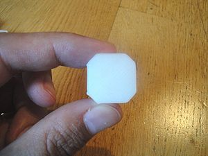
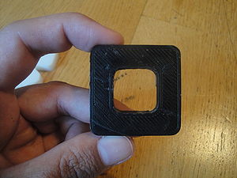

| Cubo biselado en Thingiverse |
|---|


(click para ampliar)
Contenido
[ocultar]Introducción
Librería en OpenScad para hacer cubos biselados. Además de hacerlo como librería, la implementación se ha hecho de tres formas diferentes, para enseñar openscad en los tutoriales: usando operaciones booleandas, usando el operador hull() o usando el operador minkowski()
Instrucciones
Hacer un cubo Biselado es muy fácil. El código Openscad es el siguiente:
#use <bcube.scad>
bcube([20,20,10], cr=4, cres=0);
Donde cr es el radio de las esquinas (corner radius) y cres es la resolucón (corner resolution). cres=0 significa que hay 0 puntos, por lo que se hará un cubo con las esquinas oblicuas (a 45 grados). cres=1 añade un punto en el medio de esta recta, cres=2, dos puntos, etc. Cuando mayor sea cres, más redondeadas serán las esquinas del cubo.
Descarga
| Beveled_calibration_cube.stl | Cubo de calibración redondeado |
| examples.stl | Ejemplos de cubos biselados, con diferente número de puntos en biselado: Cubo normal, 0, 1 y 4 |
| test.stl | Pieza de prueba: cube redondeado con |
| beveled_cube_openscad.zip | Fuentes, para OpenScad |
Fotos
| Álbum de fotos completo |
|---|
 Cubo biselado con mismo radio pero diferentes resoluciones (click para ampliar) |
 Cubo biselado, con vaciado interior biselado también (click para ampliar) |

Repositorio
- Repositorio SVN: http://svn.iearobotics.com/3D_objects/bevel_cube/
Autor
Licencia
| |
Enlaces
Noticias
- 06/Septiembre/2012: Primera versión de esta página